|
Creating your first level
With this tutorial you are going to learn some of the MaxED basics.
Issues like basic modeling, booleaning, exit creation (visibility
optimization) and exporting the level to
the game are covered. Please refer to other MaxED
documentation or other tutorials for additional information .
Start MaxED. Make sure that you have set it up correctly (see "Setting
up MaxED") and it is working
with the game database. Download the tutorial file (Creating_first_level.zip)
to see what will be our goal. Then, it might be best to close the
document and start from scratch.
A new document...
By default, MaxED opens an empty level file with no textures and no
geometry, just the blue grid and the camera in their default positions.
If you do not already have an empty level file open for some reason,
you can get one by selecting File/New...
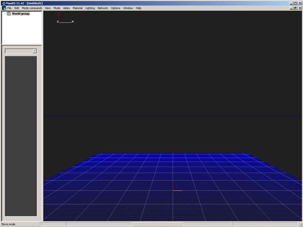
Few words about modes...
Editing-wise, MaxED is based on different editing modes:
F3 – “Model” - New entities/key points/meshes are created in this mode.
F4 – “Extrude” – This is essentially a polygon editing mode.
F5 – “Transform” – An object editing mode.
F6 – “Texture” - Most of the texture related editing is done in this mode.
F7 – “Exit creation” - Exits are created in this mode
F12 – “Move grid” - Most of the grid functions are available always, but some additional grid manipulation is done in this mode
SPACE – “Move” – The movement mode.
Whatever manipulation you want to do to your level, you have to be in the correct editing mode before you can do
the right things. Some commands can be done in multiple editing modes for user’s
convenience. For example you can do some texture operations in F5 mode as well. You can get a list of available commands in each mode from the “Mode Commands” menu. It only shows the commands of the current mode you are in. You can also get the “Mode Commands” menu by pressing the middle mouse button or
CTRL+SPACE
in the render window.
Moving around (Move mode)
You can now try moving around in the world. You can look around freely by pressing down LEFT MOUSE BUTTON (LMB) and moving the mouse.
Move forwards and backwards by pressing down RIGHT MOUSE BUTTON (RMB) and moving the mouse forwards or backwards.
Strafing is done by pressing down SHIFT and moving the mouse.
TIP: If you can't move, make sure you are in "Move" mode by pressing spacebar.
Note that pressing spacebar multiple times toggles between two types of movement modes.
The regular and a so called "Around"-mode. The "Around" mode makes the view move around any given point in the level
geometry (pressing and holding LMB initiates horizontal rotation around
that point, RMB is for vertical rotation). Since we don't have any geometry yet, we can't use it.
Adding textures
First, you will need to add textures to your level. MaxED handles textures
as "materials". There are several material categories to which
organize your textures, each with their own properties (sound, decals,
etc.), and all textures in a specific category will behave the same in the
game. This means that if you put a brick texture to the wood -category, it
will emit wood particles when shot, sound like wood when stepped on, and
leave a wood decal in the game. Adding textures to a level can be done
in more than one way, but the best way, at least for now (to get our
tutorial rolling) is to grab
all the textures of another level file, in this case from the example
level "creating_first_level.lvl". To do this, select Insert materials from file from the Material menu. Navigate the selector to the
"creating_first_level.lvl",
select it and press OK.
After small preprocessing delay, you should see a bunch of textures in the material palette
window bottom-left corner of the MaxED window, with texture names and texture sizes shown. Take
a moment to get yourself acquainted with the few materials (textures)
you just inserted, notice also that above the material selector there is
a pop-up list that shows the current material category. Select also other categories to check out
their contents. When you click a
texture with LMB, you make that the current material. The active texture is indicated by a blue highlight. TIP:
If
you want to add some of your own textures, you can drag and drop
them from windows to material palette or use Insert bitmaps.
MaxED can handle JPG, TGA, PCX, SCX and BMP formats, but it is recommend
you use jpg, since at its highest quality the difference to, for
instance TGA, is almost unnoticeable and the file size still a lot smaller
(much of the size of a level comes from the textures). The textures can
be of any size, but for compatibility reasons and better performance on some
hardware, it is better to keep the dimensions in 2 based figures: 2, 4, 8,
16, 32, 64, 128, 256 etc. As texture memory and rendering speed are always
something to consider, texture resolution should not usually exceed 1024
in any dimension. Right-clicking
the material in the material palette will bring up a a menu with lot of
settings for materials, but we will jump into that in more detail later.
Creating some room geometry (F3 mode)
By default MaxEd is in wireframe mode. Use F2 to toggle into
texture
rendering mode (alternatively toggle Mode/Wireframe tick off from the
menus). Generally all MaxEd work is recommended to be done in the textured
mode and you need the WF mode very rarely, if ever. Try to toggle between
the modes now.
TIP: If nothing seems to happen, try right-clicking inside the
rendering window first. Some options (like switching modes) in MaxED
aren't available before you make the rendering window active by clicking
in it. It is recommended that you right-click as this minimizes the risk
of accidentally moving something.
Lets adjust the preferences a little before we proceed any further.
Open preferences dialog by pressing Ctrl+P.
At this early stage, we do not want to worry about exits or lightmaps. So
remove the tick from Exit
acceleration and make sure that the radio button at Texture display
is set to Only primary texture. We'll get to these issues later,
so let's just press OK for now.
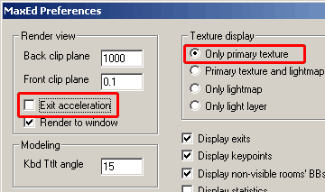
Next we’ll create a simple room. Press numpad +/- to adjust grid
size, by default it is 0.5 meters so let's make it one meter by pressing
numpad + once. You can see the current grid unit in the bottom right
corner. Move closer to the grid and turn yourself a little more towards
the grid (i.e. look down a little). Press F3 to switch into Model
mode.
Click the brick material in the default category if you have not already
done so. Now draw a shape onto the grid.
Do this by pressing LMB on the grid points. While drawing, keep an eye on the lower right corner to see the
measurements of the shape you’re creating. Draw a 6m x
8m square on the grid.
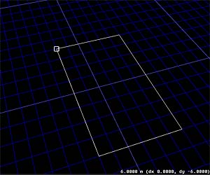
While drawing, remember that the shape can not intersect itself, a
vertex causing this is considered illegal, and MaxED won't let you place
such a vertex (the shape will turn red). You can press delete during
the drawing to undo last vertex placement. By pressing spacebar or ESC
you can
cancel the drawing altogether.
When you have placed all the 4 points, press RMB to extrude the shape into a
3D object. The shape now changes from a 2D shape into a 3D-object
with texturing visible (unless you are in WF mode) with the mesh faces pointing
inwards, meaning that you see all the faces when you are inside it (these
are used for rooms).
If you are outside the mesh (like here), the faces that have their backsides towards
you get culled and are not visible. We are making a room, so this
is exactly what we want. TIP: From the preferences
(“flip faces after mesh creation”) you can set whether all the
objects are by default created with their polygon faces pointing outwards
or inwards. You can manually flip the object with ‘CTRL-F’
while pointing at the object in F4-mode.
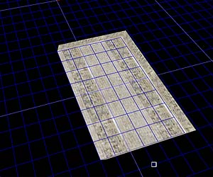
You should also
see a new mesh appear in hierarchy list in top-left corner named "New Mesh
00". Right-click the name in the list and select Properties
from the menu. You get a dialog with the name on the middle, change this
to "Startroom".
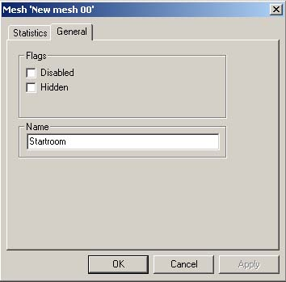
If you think that your shape was a
complete failure, you can delete the mesh either from the hierarchy list
by right-clicking the name and selecting kill, or by going to
F5 mode, selecting the room with LMB click and pressing delete. TIP:
You can move around with arrow keys while you are drawing objects outlines
in F3 mode. To make use of this while creating bigger, more complex
objects, it's a good idea to first point the camera directly towards the
grid so the distance to the grid remains the same when moving. Ctrl
combined with up and down arrow will advance and back up during drawing. TIP: If you don't want to model a mesh with volume, but rather just a single polygon,
a 2D-object, draw the desired outlines to the grid just as above, but
hold down SHIFT when clicking RMB. Note however, that while
sometimes useful, 2D-objects are a lot more cumbersome than 3D-objects
because they cannot be transformed later as 3D-objects can. If you want a
2D-object in a level that you can fully manipulate in MaxED, make it a
3D-object, and texture all but one face with a dummy texture (any texture
that you put in the "dummy" -category). All polygons with this
texture will be completely unnoticeable in the game.
Editing room polygons (F4 mode)
You have created a basic form for the room, but it is only one
current grid unit thick (1 meter, if that's what you had for the grid size
when you extruded the object). That is clearly not enough
(Max requires some 2 meters minimum as he is 185 cm tall, and the camera
works best if the rooms are some 4 meters or more tall) so we have to
extrude the shape a little by modifying its polygons. Switch into
F4 mode, move cursor over the ‘ceiling’ polygon (but
do not click) to select a poly (You will see the active polygon indicated by yellow/red outline).
Below left you see what might happen when you point at the roof from
above, and "select culled polygons" in the preferences is
not on: the floor gets selected, not the roof. To select the
roof, either move down and look up to see the roof, or even better, use insert
key to toggle "select culled polygons" option on/off. Once on, you
can select polygons even from their back side as seen on right.
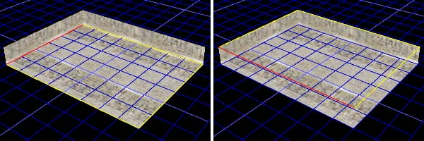
Now you can extrude shape by pressing LMB and dragging mouse
up/down.
In this case, it may be easier to press arrow keys up/down to get more
accurate control. If your grid unit is still 1 meter, press cursor up 3
times to extrude mesh 4 meters high as seen here. If you do not move your
mouse, you can keep pressing cursors up/down till you are satisfied.
Pressing cursors right/left or RMB would skew the face in relation to
active edge (red one) but lets not get into that now.
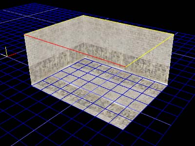
Congratulations, you have made your first room, you will
be making killer levels in no time :-) Notice that in
MaxED usually all of the meshes you make are volumes, not just a bunch
of polygons. MaxED is a so called 'solid modeler'. You can not
extrude or skew polygons of an object through itself (or any edges),
because that would result into illegal volumes and would mess up the
Boolean operation functionality. For instance,
you can not bring the roof down to absolutely touch the floor -- that
would make the walls zero height and the room volume non-existing. You
can get closer than one meter though by making the grid unit smaller.
You should not also ever delete faces from rooms or anything that you
plan to Boolean later. If a face (polygon) is deleted a volume is is no longer
defined -- Booleans become impossible. We'll get back to these issues in
more detail later.
The Grid (F4/F12 mode)
Before we proceed, you should learn to use the grid a bit better -- it
is your most important tool in MaxED. The grid can be
aligned by hovering over a polygon in F4 mode and pressing A (free align)
or Shift-A (align in world coordinates). Remember to turn the grid on (numpad
*). Please note that the grid will be placed to the intersection
of your camera's normal (a 'beam' away from the middle of the screen) and
the polygons plane that you point. You should always look fairly directly
to the polygon that you want the grid to be aligned to. If you are in a very
low angle, the grid might be placed pretty far as. See the example below
left, where the grid is aligned to the floor. The one on the
right is a much more successful alignment, as the middle of the screen is
better positioned in relation to the plane of the desired polygon.
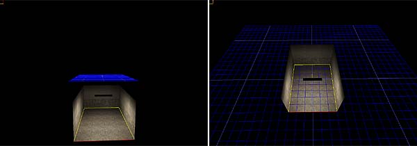
Practice a little: Move around your model and switch to F4 mode to
align the grid. Try to align to another polygon (wall for instance) and
move again. Try switching the backface selection on/off by pressing Insert
when
aligning. Also try to change the grid size (numpad +/-). Go into the
Grid mode by pressing F12. In this mode you can move the grid around with
LMB and raise and lower it in steps of one current unit by RMB --
alternatively by using cursor keys and PageUp/PageDown. Notice the spot
in the middle of the grid, that is the grids origin. You need that in some
operations, like when you want to place the pivot point of an object. If
you get completely lost, go to F12 mode and press R to reset the grid and
the camera to their default positions.
Handling objects, using Booleans (F5 mode)
Let's copy the room mesh to get another room. Go to F5 mode, then select the
room by clicking LMB on it. Now copy/paste it by pressing CTRL-C,
CTRL-V
in a sequence, and move the new room to the desired position with the arrow
keys. The copied room is automatically selected after the paste, so
you do not have to select it (top left image)
To join the rooms you should create a short corridor between them. Move the camera
so that you can see in between the two and enter F3 mode once
again. Draw the outline of the corridor.
Extrude the ceiling of the corridor to be high enough. Make it 3 meters high
(see top-right and bottom-left pictures below). Of course you CAN make
doors that are real-life sized (some 1x2 meters), but if you are planning
to move around in the level fluently, you should pretty much multiply all
real-life measurements by 150%, thus making a "good" door
something like 1,5m x 3m in size. Max's collision capsule prevents Max
going through an opening smaller than 98 cm in width and some 195 in
height.
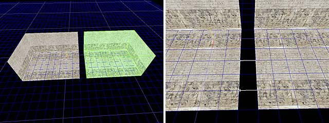
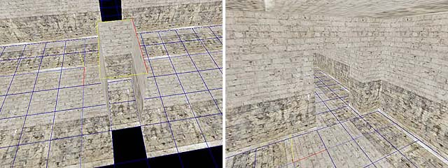
Now we need to Boolean the meshes together. It's better to stay where
you are (between and outside the rooms). Enter F5 mode and click
the corridor object with
LMB to select it, press U (Union), and click the room on
the left with
LMB. You get a dialog where you can still change the Boolean operation, or
Cancel it altogether. Union the
hallway to each one of the room meshes. As a result, you'll have two
rooms with a hallway between them.
Placing exits (F7 mode)
For visibility optimization, Max Payne uses exits, which
basically are planes that define the boundaries of the rooms. What the
engine always draws is everything inside the room you are in, and
everything you can see through exits. This means if you didn't make a
single exit to a level, the engine would render the whole level all the
time regardless of how small portion of it you would see. But don't forget
that exit processing also takes time so you shouldn't make too many exits
into the level. Typically you make exits to the doorways. So let's make an
exit to the doorway of our example level. (note that you can only
create an exit so that all of it's edges touch the room object that it is
dividing)
Align the grid to the wall with the corridor. Switch to Exit (F7) mode.
Draw the exit along the outlines of the corridor. Place a vertex at each edge position with
LMB. Do notice that in this mode MaxED shows polygon and edge selections, just like in F4 mode (Yellow and red lines). The edge that is closest to the mouse cursor is always the one that is
selected. Make sure that an edge that intersects with the grid is selected when you click the mouse button.
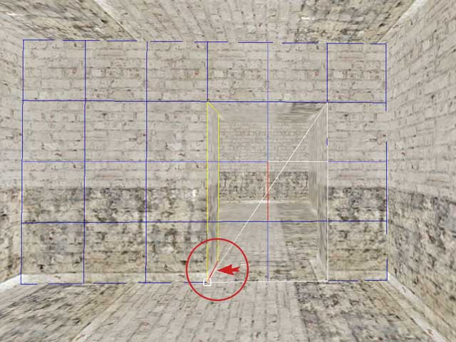
TIP: If the corridor doesn’t match with the grid you can use A
in F3 mode to align grid origin to the selected edge. (Obviously the edge has to be intersecting with the grid).
After drawing the outlines, press RMB to place the exit.
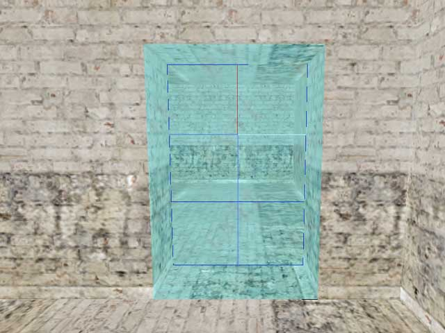
You should now see a ‘Mesh Separated into two by exits’ message on screen. Accept that with
OK and you will see the exit appear in the rendering mode showing as a cyan plane between the
room and the corridor.
The room gets split into two (look at the hierarchy tree), and now you should have “Startroom01” and “Startrom02” in there. Rename “Startroom01”
to “Startroom”.
Exporting level
First let’s add a player Startpoint to the level. Place the grid on the floor of the “Startroom”, and press
N to
insert
a new entity onto the grid. A “New Entity”-dialog will appear. Choose “Jumppoint” from the list. Now group the Jumppoint to the room it’s in by pressing
CTRL+E in F5 mode (Autogroup All).
Few words on grouping and hierarchy levels
All the grouping commands you can use are:
G – Group Selected; Select a mesh, press G, and press LMB to the desired parent mesh
CTRL+G - Lift Children; Lifts all the children of the selected mesh up one hierarchy level.
SHIFT+G – Lift This; Lifts the selected mesh up by one hierarchy level.
E – Autogroup; Groups all the meshes inside the selected room to it.
CTRL+E – Autogroup All; Goes through all the rooms in the level and does the above.
In MaxED, the level consists of “Rooms” (The topmost meshes in the hierarchy tree), which are separated by exits. All the objects inside a given room are hierarchized to be
it's children. This way the engine can do visibility optimization
properly. For dynamic content, MaxED uses messages that are sent to
specified objects. The objects are defined not only by their name but also by their
hierarchy level. For example “::Startroom::Startpoint 00”. Also for animating objects, an animating parent always moves its children along with it. In
MaxED, when you select a parent, all it’s children are also selected,
and when you move a parent somewhere, all it’s children move too.
Once the necessary grouping and Startpoint adjustments are
done, you are ready to take the level to the game. Check the Setting
up MaxED -section about the necessary modifications that you might
want to make to the game before doing any of the following.
When all that is done, export the level to the .LDB format that the game engine uses. Select “File” -> “Export X_LevelDB…” Click
on ok to
both questions. Next browse your way through to the game directory, and from there go to: “…\data\database\levels\examples\”-directory. Export your level with the name of
my_level.ldb. Alternatively, if you so choose, you can overwrite
the basic_room.ldb example so that you will not have to do the following
changes into levels.txt
If you decided to use my_level.ldb as the name, you need to edit the levels.txt that we extracted from
the ExampleMod (see Setting up MaxED). Opening it up, you will see the topmost level block
(basic_room) that is used by the example level. Make a copy of the whole
block (copy/paste) so that you have two of them one after the other. Then
rename the new block to my_level. Also change the “Level” definition to be
my_level.ldb instead of “basic_room.ldb".
Below is a part of the file as you now should have it (opened in UltraEdit).
Now save the file.
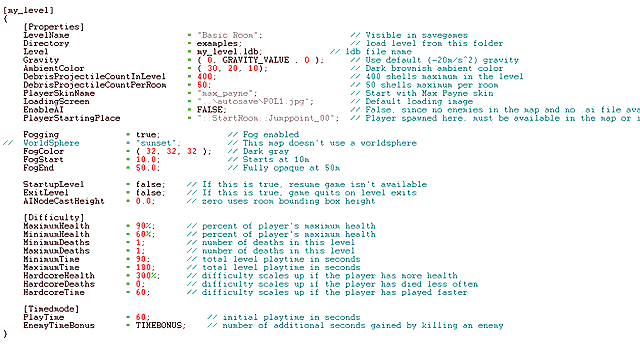
As also described in the Setting
up MaxED section, we will have to run Max Payne with some additional command line options in order to get into the developer mode. Create a new shortcut for MaxPayne.exe
or modify your previous one:
MaxPayne.exe -developer -developerkeys –window
TIP: Depending on your video hardware, you might have to
close MaxED when you run the game. Sometimes it is enough, that you just off the texture rendering (F2) while you are running the
game, as having these both open and consuming graphics memory is sure to
cause some problems, except perhaps on a very state-of-the-art hardware.
If you overwrote the basic_room.ldb, you can access you
level by choosing that menu item in the developer menu. If not, use the
console to init your level. Once you have the game running in developer mode, you can access to the game console with
F12. It has three modes which you toggle by pressing F12 multiple
times:
-
Logging (console and it's output is visible but the keyboard commands go to the game)
-
Disabled (game behaves like it does without developer mode)
-
Enabled (your keyboard input goes to the console)
Now type into the console:
Maxpayne_gamemode->gm_init(my_level);
This will load up your level. However, as you are still in “menu” mode,
the level won’t start loading before you switch into game mode.
X_modeswitch->s_modeswitch(game);
The level should now start loading.
Reviewing your work
Now you should see the level in the game and be able to
run around with Max. If you have followed this tutorial, well...
admittedly there is still some room for improvement in the level
:-)
Naturally to make it good, you need to do the lighting and more appropriate
texturing right. A little more
furniture and other props would not hurt also. If you have not lit and
calculated the radiosity yet, the most notable
strangeness is likely the odd looks of the walls, which is due to
(uncalculated) lightmaps.
Now that you have established the pipeline to get the
level to the game, you can always see your progress. If you have not yet
done so, next take a look at the other basic tutorials which teach
more. Whenever you feel like it, export the
level again and review it in the game.
|